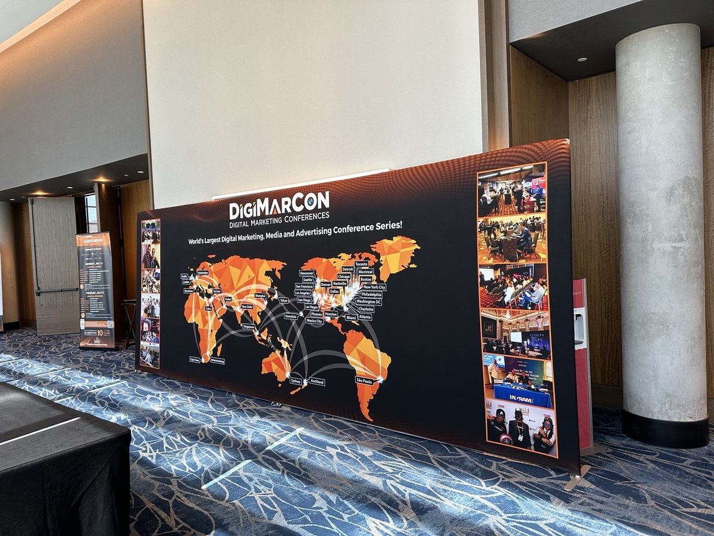

NSF I-Corps · Entrepreneurial Lead · 2024 – present
MobiliSlice: would anyone pay for this?
MobiliSlice is a personalized car-sharing system for urban mobility. I served as Entrepreneurial Lead in the National Science Foundation's I-Corps program, which trains researchers to test whether their technology has a real market by talking to customers before building for them.
The business side
Customer discovery
I led more than 100 customer-discovery interviews with potential users, operators and industry stakeholders. Each interview tested a hypothesis about who has the problem, how much it hurts and what they pay today.
That evidence helped secure a $50K grant and shaped what the product should, and should not, be.
The technical side
Making the unit economics work
I built the operational core: a dispatch optimization model (integer programming in CPLEX) to position and assign vehicles, and ML demand forecasting to anticipate where and when cars are needed.
The cost model showed a 75% cost reduction compared with owning a personal vehicle. I also configured the venture's operational modules in SAP.
In the field
Taking the idea to the market
Customer discovery doesn't happen at a desk. I went to industry conferences to meet the people who would buy, operate or regulate a service like this.


What it taught me
A good model can still solve the wrong problem.
I-Corps changed how I work as an engineer. I learned to treat a product idea the way I treat a model: as a hypothesis that data can prove wrong. Much of the time, the interviews told me something the equations couldn't, like which customer feels the pain most and what they would realistically pay.
I bring that habit to every analytics project. I find out who makes the decision and what they need to see before I optimize anything.
Let's talk
I'm looking for roles where optimization and data science meet real business decisions.